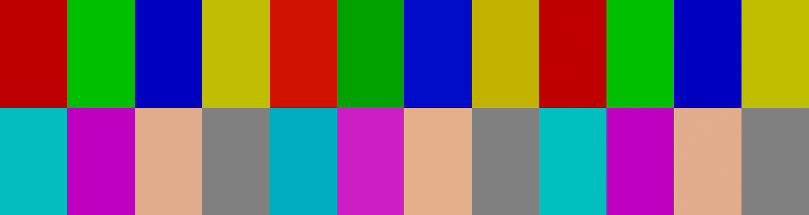
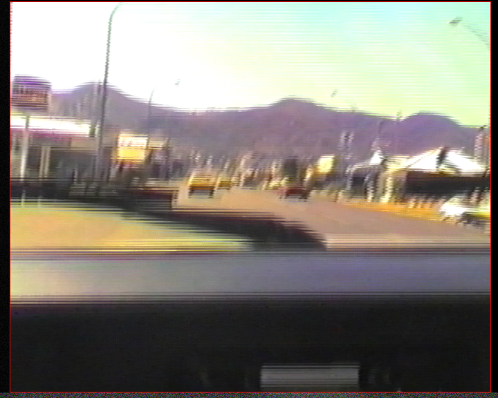
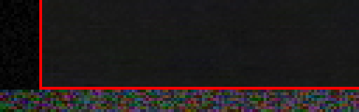
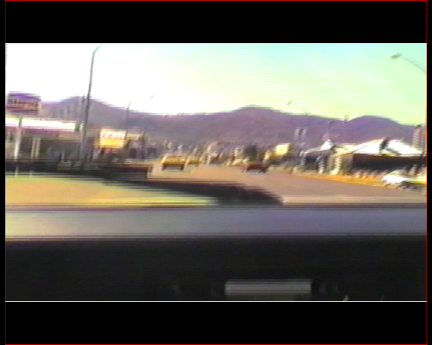
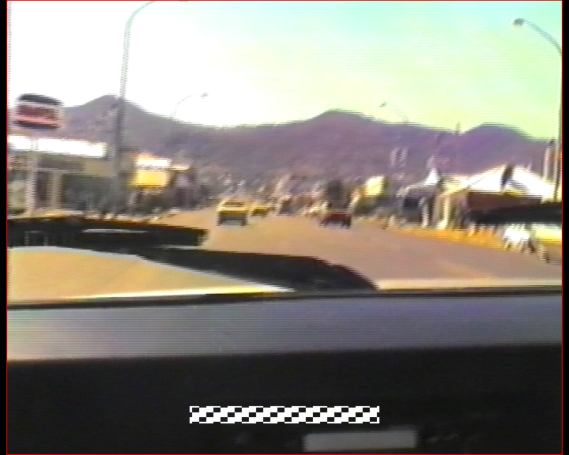
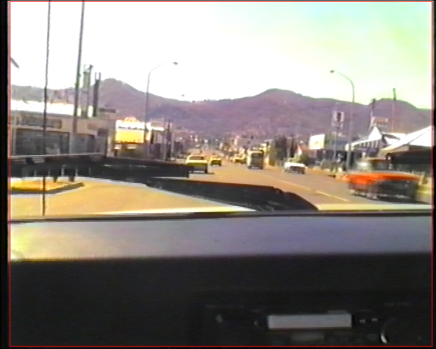
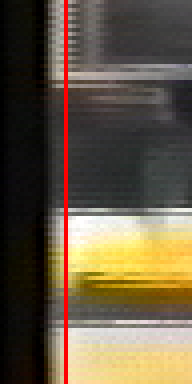

Crop & Resize: BT.601 → BT.709 on SD → HD, and Detect borders
Build report, 2026-11-08, app 1.7.0. Two Crop & Resize improvements suggested by a survey of VapourSynth restoration tools (sd-video-restore, VCG Deinterlacer, vhs-vapourizer, Video-Enhancer all convert SD colour to BT.709 on upscale; VCG Deinterlacer 2.0 has auto-crop). Measured on an M1 Pro, macOS arm64, deps bundle 1.16.0 (unreleased).
- BT.709 conversion, built. An SD (BT.601) source upscaled to HD is converted to the BT.709 matrix in the script when the output is at least 720 lines or 1280 wide (Auto, the default; also Always and Never), and both sides of the encoder say 709. Through the real worker, every colour patch comes back within 0.67 levels of the source decoded as 601, whether the output is read through its tags or as 709 regardless. Without it, a player that ignores the tag on HD shows a 75% green 30 levels dark and 100% green 40.
- Only the matrix is converted. Converting the primaries too (SMPTE C → BT.709) moved a 75% green by 55 levels on a player without colour management — a colour shift as large as the one being fixed. The primaries tag keeps the source's, so colour-managed players stay exact. This departs from the brief, which asked for the primaries too; the reason is §1.3.
- Detect borders, built (
--detect-crop). On fixtures of real VHS picture with known borders, every edge came back exact: noisy blanking, a 2-line top, an 8-line head-switching band (12 per field when interlaced), 72-line letterbox bars reported apart, subtitles and fades ignored. On a DVB-T broadcast it matches a by-eye measurement. About 1 s per SD source, 2.9 s at 1080p. - New preset: SD Tape → HD (YouTube / TV).
1. BT.601 → BT.709
1.1 The problem, measured
An SD picture's YCbCr samples are coded with the BT.601 matrix. VapourBox carried the source's -colorspace tag through to the output, so an SD video resized to 1080 lines was a correctly tagged BT.601 HD file. Players and TVs that pick a matrix by frame size and ignore the tag decode it as BT.709. Eight patches, made in RGB, encoded as 601 limited range, and decoded as 709 (scripts/gamut.py, 16-bit intermediates so rounding doesn't muddy it):
| Patch | Source (601) | Misread as 709 | Worst channel error |
|---|---|---|---|
| 75% red | 191, 0, 0 | 208, 18, 0 | 18 |
| 75% green | 0, 191, 0 | 0, 161, 0 | 30 |
| 75% blue | 0, 0, 191 | 0, 11, 199 | 11 |
| 75% yellow | 191, 191, 0 | 194, 180, 0 | 11 |
| 75% cyan | 0, 191, 191 | 0, 173, 194 | 18 |
| 75% magenta | 191, 0, 191 | 205, 30, 196 | 30 |
| 100% red | 255, 0, 0 | 255, 25, 0 | 25 |
| 100% green | 0, 255, 0 | 0, 215, 0 | 40 |
| Skin tone | 224, 172, 140 | 229, 175, 138 | 5 |
| Grey | 128, 128, 128 | 128, 128, 128 | 0 |
1.2 What was built
- Option: Crop & Resize → Resize → Convert Colour to BT.709 (HD standard): Auto (default), Always, Never. Auto converts a BT.601 source (tagged
bt470bgorsmpte170m, or untagged below 720 lines, which is how the app and players read an untagged SD file) when the output is ≥ 720 lines or ≥ 1280 wide. The output size is computed in Rust byCropResizeParameters::output_size, which mirrors the script's crop, upscale, fitting and bars; the decision has to be made before the script runs because the encoder's tags depend on it. - One decision point:
VideoJob::converts_to_bt709, andVideoJob::output_color_metadata()for everything that describes what the script delivers: the encoder's input and output flags (still identical, per the 2026-09-26 rule), the preview's swscale step, and the passes after Crop & Resize (Face Restoration, RIFE, the border fill). The AI upscale runs inside the resize, before the conversion, and keeps the source's. - Script: a
{{#COLOR_709}}block in both templates right after the resize:resize.Spline36withmatrix_in_s= the source's,matrix_s="709", the source's range, error-diffusion dither, after removing_Matrix/_Rangeframe properties (§1.4). - Tags: matrix
bt709, transferbt709(BT.601's transfer is the same curve), primaries the source's (tagged, or EBU for 576/288 lines, SMPTE C otherwise), range the source's (tvwhen untagged).
1.3 Why only the matrix (a departure from the brief)
The brief asked for primaries and transfer to be converted too where they differ. Both were tried. The table shows each patch decoded as 709 without colour management, which is how most players show video:
| Patch | Source (601) | Matrix only | Matrix + primaries, SMPTE C → 709 | Matrix + primaries, EBU → 709 |
|---|---|---|---|---|
| 75% red | 191, 0, 0 | 191, 0, 0 | 186, 36, 0 | 194, 0, 0 |
| 75% green | 0, 191, 0 | 0, 191, 0 | 55, 188, 0 | 0, 191, 30 |
| 75% blue | 0, 0, 191 | 0, 0, 191 | 28, 34, 191 | 0, 0, 190 |
| 75% cyan | 0, 191, 191 | 0, 191, 191 | 59, 190, 191 | 0, 191, 191 |
| 75% magenta | 191, 0, 191 | 191, 0, 191 | 187, 47, 191 | 194, 0, 190 |
| 100% green | 0, 255, 0 | 0, 255, 0 | 73, 251, 0 | 0, 255, 40 |
| Skin tone | 224, 172, 140 | 224, 172, 140 | 221, 173, 140 | 226, 172, 140 |
A gamut conversion is colorimetrically correct only for a viewer whose player also colour-manages the source; for everyone else it changes what the picture looks like by as much as the misread matrix does. Keeping the primaries and tagging them as the source's gives every kind of player the source's colour: one that ignores tags shows the same RGB the SD file showed, and one that colour-manages reads the primaries tag and converts on display, exactly as it did for the SD file. VCG Deinterlacer converts the matrix only too (it tags the primaries 709, which is a small mislabel this avoids).
Limit: the comparison is of decoded RGB code values, not of perceived colour on a calibrated display. It says how far a non-colour-managed player's output moves; it says nothing about which result a colourist would prefer on a reference monitor.
1.4 A trap: R78 lets frame properties override *_in_s
The first run of gamut.py printed "misread as 709" equal to the source. VapourSynth R78's resizers take a clip's _Matrix property in preference to matrix_in_s (the prefer_props argument is deprecated and ignored), and the test clip carried _Matrix=6 from its own creation. The template block therefore removes _Matrix, _Range and _ColorRange before converting, so the worker's reading of the source's tags is what decides. The other colour conversions in the templates (AI upscale, RIFE, border fill) are unaffected today because nothing upstream sets those properties, but any new conversion that relies on *_in_s needs the same care.
1.5 The pixel test, through the real worker
app/test/integration_bt709_conversion_test.dart (heavy) makes a 720×576 BT.601 FFV1 clip of eight patches, encodes it to a 1920×1080 box (1350×1080, square pixels) with the conversion on and off, and decodes each output to RGB with swscale's accurate path (accurate_rnd+full_chroma_int), averaging a 9×9 block at each patch centre:
| Patch | Source (601) | Output, through its tags | Δ |
|---|---|---|---|
| 75% red | 191, 0, 1 | 191, 0, 1 | 0.26 |
| 75% green | 0, 191, 0 | 0, 191, 0 | 0.01 |
| 75% blue | 0, 1, 192 | 0, 0, 191 | 0.64 |
| 75% yellow | 191, 190, 0 | 191, 191, 0 | 0.67 |
| 75% cyan | 0, 191, 190 | 0, 191, 190 | 0.37 |
| 75% magenta | 191, 0, 192 | 191, 0, 192 | 0.06 |
| Skin tone | 224, 172, 140 | 224, 172, 140 | 0.36 |
| Grey | 128, 128, 128 | 128, 128, 128 | 0.00 |
- Tolerance asserted: 3 levels. The same holds decoding the output as 709 regardless of its tags (what the tag-ignoring player does).
- Tags written:
color_space bt709,color_transfer bt709,color_primaries smpte170m,color_range tv. - Off: tags stay
smpte170m; both files decoded as 601 agree within 1 level (asserted), and the Y/U/V samples at every patch centre are the source's exactly (scripts/patch_yuv.py: e.g. 75% green 112/72/58 in both; converted, 133/62/52). Read as 709, the worst patch (75% magenta) is off by 30 — the control that the test can see the problem. - Auto at SD size (a 700-line box) does not convert; an untagged 480-line source is read as 601 and tagged with NTSC primaries.
- Preview = encode: the worker's preview of frame 2 against the encode decoded by ffmpeg's default path: mean absolute difference 0.000/255. (A first version of the test compared the preview with the accurate decode path and measured 1.55/255: that was swscale's default yuv→rgb path, not the conversion, which is why the comparison is now like for like.)

1.6 Cost
scripts/convert_cost.py, 20 frames of the VHS fixture resized to 1350×1080 4:2:0:
- The conversion runs at 97–140 fps (7–10 ms per frame, 8 threads) across runs — small beside QTGMC and an NNEDI3 upscale at that size.
- A 601 → 709 → 601 round trip (two conversions, each through 4:4:4 and back with error-diffusion dither) changes luma by 0.25/255 on average and chroma by 0.06/255, so one conversion costs at most that.
Limit: Apple Silicon only; one clip; the round-trip number bounds the loss from above rather than measuring a single conversion.
1.7 Default and presets
- Default Auto, knowingly changing existing output. Any job that resizes an SD source to HD now writes 709-tagged, converted samples where it wrote 601-tagged ones, including presets saved before 1.7.0 (the field is absent, so it reads as Auto). The old output was correct and shown wrong by many players; the new one is shown right by all of them, at a cost of ≤ 0.25/255. A user who needs the old behaviour picks Never.
- No built-in preset resized before (asserted in
processing_preset_test.dart), so none changes. - New preset, SD Tape → HD (YouTube / TV): QTGMC Slow, light SMDegrain, CCD, square pixels, NNEDI3 2x then Spline36 into a 1920×1080 box (4:3 lands at 1440×1080), BT.709 Always, CAS 0.3, H.264 CRF 17
slow, 8-bit 4:2:0, MP4, AAC. 4:2:0 8-bit because a 4:2:2 capture-card source would otherwise be encoded as H.264 High 4:2:2, which TVs and browsers refuse.
2. Detect borders (--detect-crop)
2.1 Method
24 frames spread over the middle 90% of the source (or its trim) are decoded as 8-bit 4:4:4 by ffmpeg, four at a time, and measured line by line in plain Rust (worker/src/crop_detect.rs). VCG Deinterlacer 2.0's analysis/edges.rs (MIT) was read as a reference for which signals separate blanking, ramp and head switching; nothing was ported, and the thresholds were set on our own fixtures.
- Black and blanking: a line whose 98th-percentile brightness over every usable frame is within 30% of the way from black to the picture's typical line, and whose detail is under half the picture's or 6 levels. The percentile is over all frames, so a line that shows picture in any of them is picture. One line counts only if it is true black (≤ 4 above black) in every frame — a capture card's first line.
- Ramp: up to 6 more lines, each dimmer than 85% of the picture just inside and rising.
- Bars: a dark run wider than 5% of the dimension is framing (letterbox / pillarbox), reported in
cropWithBarsand never in the recommended crop. - Head switching: a bottom line is torn in a frame when it differs from the line above in the same field by 2.2× the picture's typical line-to-line difference (and ≥ 4 levels luma or ≥ 2.5 chroma) across 6 of 8 width segments, or matches the line above best shifted sideways by ≥ 3 px. A line is band when torn in ≥ 50% of usable frames; the band must start within 2 lines of the bottom (above any black lines) and may contain one untorn line.
- Dark frames (central 90th percentile below 48) are left out of every statistic.
- Output: the recommended crop rounded outward to steps the Crop pass accepts (even; fours vertically for 4:2:0 still interlaced at the crop) and mapped through Rotate / Flip; the crop with bars; and, for a band of up to 16 lines, Edge Repair's widths to repair it instead. A per-edge confidence is the share of usable frames whose picture reaches that edge.
2.2 Accuracy
Fixtures (app/test/integration_crop_detect_test.dart, heavy): 30 frames of the VHS capture interlaced_test.avi, cut to its inner 664×536 (no borders of its own), resized into a 720×576 canvas, and given known edges; FFV1 4:2:2. The band shifts each bottom line sideways by 5–13 px from a line 10 above, with ±25 luma noise and ±40 chroma noise, different every frame. Measured = unrounded; release worker:
| Fixture | Left | Right | Top | Bottom | Time |
|---|---|---|---|---|---|
| VHS: noisy blanking, band 8 | 14 → 14 | 10 → 10 | 2 → 2 | band 8 → 8 | 1.5 s* |
| Interlaced (TFF), band 12 | 14 → 14 | 10 → 10 | 0 → 0 | band 12 → 12 | 1.0 s |
| Letterbox 72 + blanking 8 | 8 → 8 | 8 → 8 | bar 72 → 72 | bar 72 → 72 | 0.9 s |
| Subtitles 40 lines up, 2 frames in 3 | 8 → 8 | 8 → 8 | 0 → 0 | 0 → 0 (not band) | 1.1 s |
| Fades: every 3rd frame near black | 12 → 12 | 12 → 12 | 4 → 4 | 0 → 0 | 0.9 s |
| 1080p, 240-px pillarbox | bar 240 → 240 | bar 240 → 240 | 0 → 0 | 0 → 0 | 2.9 s |
* The first run includes cold disk caches. Debug builds (what the heavy tests run) take 0.8–1.9 s per SD fixture. Fades: 16 of 24 sampled frames were usable. Letterbox: the bottom bar's confidence is 0.17, because the VHS picture's dashboard just above it is dark in most frames — the edge is right, the evidence thin, and the panel says so (it warns below 0.25).
2.3 Real files
| Source | By eye | Measured | Recommended crop | Time |
|---|---|---|---|---|
| DVB-T broadcast, 720×576 TFF 4:2:0 | left 7 black, right 8 black, top 0, bottom 4 black + 1 dim | 7, 8, 0, 4 + 1 ramp | 8, 8, 0, 8 (fours: still interlaced 4:2:0) | 0.5 s |
VHS capture interlaced_test.avi, 720×576 TFF 4:2:2 | left: 10 dark columns (19–30 levels, grainy) then a 9-column rise; right: a 7-column rise from 44; top: one line at 0 in every frame | left 10 + 6 ramp, right 3 + 3, top 1, bottom 4 (confidence 0.12) | 16, 6, 2, 4 | 1.0 s |
- The VHS capture's left ramp runs about 9 columns; the detector follows 6 (its cap) and stops at 16, leaving a few columns of slightly dim picture. Whether those columns are ramp or picture is a judgement; the cap keeps the detector from eating into genuinely dark content.
- Its bottom 4 lines are reported as blanking with confidence 0.12: the dashboard above them is dark in nearly every frame, so few frames show where the picture ends. No head-switching band is visible in this capture (Figure 6), and none was reported.






2.4 Traps, and what holds each off
| Trap | Defence | Heavy fixture |
|---|---|---|
| Dark scenes, fades | 98th percentile over all frames; dark frames dropped; confidence says how many frames show the edge | fades |
| Letterbox inside 4:3 | Runs over 5% are bars: reported, not cropped by default | letterbox |
| Noisy blanking | Absolute detail floor (6 levels) beside the relative one | VHS |
| Subtitles near the bottom | Band = torn across 6 of 8 segments, in half the frames, from the bottom | subtitles |
| Interlaced sources | Lines compared within the field; crop in fours for 4:2:0 still interlaced | interlaced, DVB-T |
| A band under a letterbox | Band cropped, bar above it kept apart | (unit test) |
| One dark line that is picture | A single line counts only if true black in every frame | (unit test) |
| Rotate / Flip before the crop | The crop is mapped into the turned orientation; Edge Repair's stays in the source's | (unit test) |
2.5 App
Crop & Resize gains a Detect borders button (NEW badge, 1.7.0). The panel lists each edge ("Left: 10 px of black / blanking and a 2-px soft edge", "Bottom: 8 lines of head-switching noise", "Top: 72-line letterbox bar"), the crop, and up to three buttons: Apply crop, Crop the bars too, Repair the band instead (Edge Repair at the bottom, the rest cropped — keeps the frame height for DVD authoring). Nothing changes until one is pressed (crop_detect_widget_test.dart). The crop sliders' maximum rose from 200 to 480 so a 1080p pillarbox fits.
3. Decisions
- Matrix-only conversion, primaries tag kept: §1.3.
- HD threshold 720 lines or 1280 columns: the same height the app already guesses 709 from for an untagged file, and the width catches a scope picture cropped short (1280×536).
- Default Auto: §1.7.
- Bars not in the recommended crop: a letterbox is the picture's framing; cropping it changes the aspect, which is the user's call.
- Analysis in Rust, not VapourSynth: per-line statistics need no plugin, run in about a second, and are unit-testable on synthetic frames.
- No NOTICES entry for VCG: its code was read, not ported.
4. Not tested
- A real capture with a clearly visible head-switching band: none is in
Tests/TestResources/; the band in the fixtures is simulated (a sideways tear with noise), modelled on how it looks, not on a measured capture. - Windows and Linux, and macOS x64. The analysis is plain Rust; the decode uses the same ffmpeg arguments as the preview. The BT.709 block is plain zimg.
- HDR sources are never converted (asserted), and were not run.
- A colour-managed player's rendering of the converted file was not checked on screen.
5. Reproducing
cd docs/reports/2026-11-crop-detect-709 scripts/run_vs.sh scripts/gamut.py # §1.1, §1.3 scripts/run_vs.sh scripts/convert_cost.py # §1.6 python3 scripts/patch_yuv.py ../../../Tests/TestOutput/bt709_conversion/*.mkv # §1.5, after the heavy test SCRATCH=/some/dir scripts/crop_detect.sh # §2.2, §2.3 (runs the heavy test, then times the release worker) (cd ../../../app && flutter test test/integration_bt709_conversion_test.dart) # §1.5 scripts/images.sh # the figures, from the two heavy tests' outputs
All scripts take the deps bundle from DEPS (default deps/macos-arm64) and find the repo from their own location.